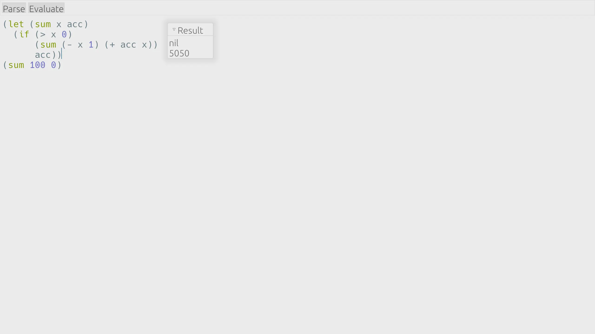

Free and open source. Quick from launch to every keystroke, with configuration powered by Lisp.
Native GUI and Rust powered performance, we as developers know what you need for an essential tool like a code editor. Write code with joy in Crispmacs.